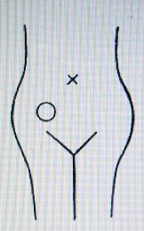

病気の分析 ６ 腎臓病・糖尿病・腸疾患（岡田先生療病術講義録より）
明主様御講義 「腎臓疾患」 （昭和11年7月）
「腎臓というものは「物を洗う水の働き」をするものであります。
それで、心臓が熱を吸収して毒素を燃焼すると灰が出来るから、その灰のようなものを水で洗って流す。・・・
それが腎臓の役目であります。
ですから、毒物に中（あた）ると、非常に下痢をしたり、小便が沢山出る。
その際尿は、腎臓が洗った汚水であります。
昔は腎虚などといって、精液を造る器械といったものですが、その補助はするが、作り出すものではないのであります。
それで、大熱の出た後などはよく腎臓病を起しますが、それは心臓熱で燃焼した灰が尿に混って出るので、これを蛋白といい、病気と思うのでありますが、実は浄化作用の残渣（ざんさ）であります。
牛乳を飲むと蛋白が少くなるというのは、腎臓を弱らすから、洗う力が少くなるからであります。
又、窒扶斯（チフス）や猩紅熱（しょうこうねつ）、扁桃腺炎の後など、よく腎臓が悪くなるといいますが、これは腎臓が悪くなるんではない、ヤハリ病素の洗い渣（かす）が蛋白となって出るので、非常に結構な事なんで、間もなく治るのであります。
これ故に蛋白の出るのは決して悪い意味ではないのであります。
腎臓は、そういう訳で、水の方の浄化作用の役目で、心臓は火の方の浄化作用の役目であります。
ですから、心臓と腎臓は、重要な夫婦役になります。
それで、心のシに濁りを打つと腎の、ジとなっているのも面白いと思うのであります。
又こうも言えます。心臓は火、肺は空気、胃は土、腎は水の役であります。
又、腎臓と肺臓が水で、心臓と肝臓が火の役とも言えるので、又、心臓が霊で肝臓は体、肺が霊で、腎臓は体とも言えるのであります。
腎臓病にも種々あります。
腎臓結核、萎縮腎、腎盂炎等であります。
よく萎縮腎を腎臓結核と誤られます。
本当の腎臓結核は、右か左かどっちかの内部に水膿が溜結し、それが化膿して痛みを有（も）つのであります。
そうして、普通は膀胱へ移行するもので、非常に悪性で、小便に血液が混るのであります。
そうして、膀胱結核から摂護腺、睾丸へまで移行し、最後に到って睾丸は糜爛（びらん）するのでありますが、こうなれば間もなく死に到るのであります。
又腎臓をよく手術によって剔出（てきしゅつ）しますが、多くは予後不良であります。
次に、萎縮腎は、水膿溜結が腎臓を圧迫するので、腎臓は充分の活動が出来ないので、その為尿が溢れる、その尿が毒素となり、又は浮腫になるのであります。
この診査は、腎臓部及び付近を指圧すれば必ず痛む個所があります。
そうしてこの溢出した尿中の毒素を医学では尿酸といいますが、私はこれを尿毒といっております。
独逸（ドイツ）のある学者は、「万病は尿酸が原因である」ともいっています。
今もこの説は相当認められておるようであります。
リョウマチスで、赤く腫れないのはこの尿毒が原因であります。
私はこれを腎臓性リョウマチスと言っておりますが、非常に治り易く、この尿素は割合に弱性で、溶解し易いものであります。
尿毒というものは、あらゆる病気になります。
よく腎臓が悪くて肩が凝る人がありますが、これは矢張り、尿毒が肩へ集る人であります。
足が重倦（おもだる）く痛む人など、皆この尿毒が下の方へ垂溜する為であります。
最も多いのは、尿毒が腹膜へ溜るので、そしてそこで凝る。
これは、腹部を圧すと必ず痛む所がそれであります。
この尿毒は、肋膜、喘息の原因となる事もあります。
ですから腎臓の為に喘息を起し、喘息の為に心臓病が起るんですから、間接には、腎臓が心臓病の原因になる訳であります。
腎臓の原因で脚気と似ている症状を起す事もあります。
これは割合多いので、あるいは真の脚気より多いかも知れないと思う程で、足が重く腫れたりなどして、脚気のような症状を起しますが、脚気とは全然異う。
私はこれを「腎臓脚気」と言っております。
腎臓の周囲へ水膿が溜結すると、浄化作用によって発熱する。これを腎臓炎又は腎盂炎と言います。
腎盂炎の症状は、腎臓部の痛み、腫れ、発熱等で、又特徴として脚力が無くなり、歩行不能になるのでありますが、これは頗（すこぶ）る治り易く、普通二、三回位で全治するのであります。
本療法によれば、腎臓に関する疾患は非常に治り易いんで、ほとんどの腎臓的疾患は百パーセントの治癒率であります。」 （「岡田先生療病術講義録 下巻４」より）
明主様御講義 「糖尿病」 （昭和11年7月）
「糖尿病は、甘い小便が出るとしてあります。
症状は、疲労感と、喉が渇くのと、尿の排泄多量と、尿意頻繁とであります。
又、歯の脱落も特徴であります。
この病は、患者自身の発見ではなく、医師に言われて知る人が大部分であります。
この病の人を診査しますと、必ず胃から肝臓、腹膜にかけて水膿溜結があるのであります。
そういった機能が一帯に圧迫されるのが原因であります。
特に、肝臓部が割合に酷いのであります。
膿結を溶解するに従い段々治ってゆきます。
割合治りいい病気であります。
治癒の状態は、喉が渇くか渇かぬかで最もよく判るのであります。
又、夜中に小便に行かなければ治ったとみてもよいのであります。」
なお医師で尿の検査をすれば確実であります。」 （「岡田先生療病術講義録 下巻４」より）
明主様御講義 「腸疾患」 （昭和11年7月）
「腸疾患で一番多いのは盲腸炎であります。
盲腸炎は、本療法では実に容易に治るのであります。
場所はちょうど、臍の一、二寸下から右の方へ寄った所で、医学でいう虫様突起部で、これへ膿が急激に集溜するのであります。

症状は、非常に痛んで熱が出る。
普通手術によって、虫様突起及び膿を除去しなくては生命が危いとしてありますが、本療法では驚く程速かに治ります。大抵二、三回で綺麗に治るんであります。
そうして何の為に膿が盲腸へ集溜するかといいますと、浄化作用によって、便通で排除されようとする膿が一旦盲腸に滞溜するのであります。
そうして一層排除し易からしめん為、高熱で溶解するので、溶解膿が下痢によって排除されるのであります。
この様な訳ですから、自然療法で安静にしておれば、一週間位で確実に治癒するのであります。
世人はこの事を知らないから心配して手当などする。
特に氷冷しますと膿がそこへ固まってしまうので治癒困難になり、生命の危険さえ生ずるので、止むを得ず切開除去しなければならないようになりますから、手当をするならむしろ温罨法（おんあんぽう）の方がいいのであります。
次に最も多いのは、腸加答児（カタル）でありましょう。
これは大腸加答児と小腸加答児とあります。
大腸の方は重く、小腸は軽いのであります。
原因としては、二種類であります。
一は、自然浄化作用に因って、膿が下痢となって排除される場合と、一は、毒物を食った為の中毒作用であります。
ですから、毒物を食った覚えがなくて下痢するのは、浄化作用に因るものと思えばいいのであります。
本療法によれば普通一、二回で治ります。
この外に長く肺を患い慢性下痢になったのは別で、喘息及び腹膜炎、腎臓等の水膿溜結を溶かすと下痢する事があります。
よく腸炎という事をいいますが、腸に熱がある場合は、そこに毒素があるので、浄化作用をやれば順調に治ってしまいます。
次に、腸窒扶斯（チフス）は、私は未だ治療した事はありません。
なぜなれば、あれは腸へ熱を持つのが最初ですが、その時治療すると速に熱はなくなるから、腸チフスになるかも知れぬものでも、それで治ってしまうらしいのであります。
又、本当にチフスになったものなら、病院へ入らなければならないから、私の方へは来ない訳であります。
そうしてチフスには、パラチフスと普通のチフスとの二種あります。
パラチフスは、軽症で発疹があるのです。チフスは熱が高いのが特徴で、四十度以上の熱が一週間以上も続く、そしてたおれるのは腸出血の為であります。
これの原因は、腸の内壁の粘膜に黴菌が繁殖して微小な孔（あな）を穿（あ）ける。
その孔へ固形物が触れるから発熱し、重症になれば、穿孔が進んで出血するというのであります。
この医学の説明は本当だと思います。
この病気は、医療においても、無薬で、流動食のみで自然療法をしますが、この方法は確実で成績も良いのであります。
次は腸癌ですが、これは直腸に出来易く、直腸から大腸等へ移行して相当大きなものになる場合があります。
絶対治り難いとしてありますが、本療法で非常に治り易いのであります。
軽症で一ケ月ー重症で三ケ月位であります。
医学の方では、腸癌を手術する場合は、肛門から孔を穿けて、そうして閉塞させ、人工肛門を横腹等へ付けるのですが、そこから始終糞が出て、実に悲惨極まるもので、とても臭くて側へも寄れぬのであります。
次に、悪性の腫物が腸内に出来るのがあります。
癌とよく似て、医学では肉腫といっております。
これも非常に治り難く、ほとんど不治とされてありますが、本療法によればやはり腸癌と同じく順調に治るのであります。
腸結核は、慢性下痢症で、無痛と有痛とありますが、衰弱が少なければ、容易に一、二週間位で治りますが、衰弱のはなはだしいのは治癒困難の場合があります。
腸結核は、肺結核の末期に多いので、腹部を触ってみると非常に熱い。
肺結核と併発性のものは、特に不良であります。」 （「岡田先生療病術講義録 下巻４」より）
明主様御講義 「腹膜炎」 （昭和11年7月）
「これは、水が溜るのと、膿が溜るのと二種あります。
この点ちょうど、肋膜と同じようであります。
そして膿が溜る方がズーと治りいいんであります。
膿の溜ったので随分酷いのがありますが、割合順調に治るのであります。
そうして今日、大抵の人は極軽い腹膜炎に罹っているものであります。
それは臍の周囲を圧してみて痛くないという人は滅多にありません。
そこの痛い人は必ず腹膜へ膿が溜って固まっているのであります。
水の溜るのは、早期ならよく治るんですが、相当日数を経たものは、容易に治らないのであります。
原因としては、肝臓の周囲へ水膿溜結し、その為、腎臓が圧迫されるから、尿が溢出して腹膜へ溜るのであります。
相当溜って時日を経過したものは、深部が化膿して固まっているので、こうなったのはほとんど不治とも言うべきであります。
そうして、最も悪性なのは、肝臓痛が原因での腹膜炎で、不治であります。
ですから、腹膜患者は、肝臓部が痛むかを査べる必要があります。
押してみて痛めば、肝臓からの腹膜炎であります。
肝臓が尿素を腎臓に送る場合、癌の為、腎臓への送流を遮（さえぎら）られる結果、肝臓から直接腹膜へ尿素を溢流するのでありますが、腎臓からの尿は稀薄ですが、肝臓からのは濃厚である。
それが為重症である訳であります。
又利尿剤を続用したものは逆作用が起っておりますから、非常に執拗（しつよう）で治り難いのであります。
腹膜炎は、よく肋膜炎を併発する事があります。
又肋膜炎から腹膜炎に移行する事もあります。
腹膜炎のひどくなったのは随分大きくなります。
臨月の腹の大きさよりもっと大きくなります。
よく破れないと思う位であります。
又、卵巣が腫脹して、腹膜炎と同じような症状になります。
これの悪性は極端に膨脹し、ついに破裂する事がありますが、破裂すれば、汚水が排泄されて速かに治癒するのであります。
この際医療による切開法も効果があります。」 （「岡田先生療病術講義録 下巻４」より）
明主様御講義 「腸痙攣」 （昭和11年7月）
「これは、腸が非常に痛む病気で、これは物に中（あた）った場合と、水膿溜結が腸の蠕動（ぜんどう）と触れ合って痛むのとあります。
後者は、胃痙攣の場合と同じ様なものであります。
軽症は一、二回、重症は一ケ月位で全治します。」 （「岡田先生療病術講義録 下巻４」より）
明主様御講義 「赤
痢」 （昭和11年7月）
「これは、浄化作用の最も激しいもので、赤痢で下る血は皆毒血なんであります。
浄化作用ですから非常に結構なんであります。
その証拠には実に治りいい。
私はどんな酷いのでも五日を越した事はありません。
六日目には飯を食って歩く位であります。
浄化作用ですから下るだけ下れば治るに決っております。」 （「岡田先生療病術講義録 下巻４」より）
明主様御講義 「虎列刺
（コレラ）」 （昭和11年7月）
「治療した事はありませんが、赤痢と同じ様なもので、今一層激しい浄化作用と思います。
勿論、コレラ菌に誘発されて、毒素排除作用が起るので、大浄化作用なのであります。
赤痢も虎列刺も、伝染病ですから取扱ってはならないものでそういう疑のある患者は、即時、医師の方へ渡さなければならないのであります。」 （「岡田先生療病術講義録 下巻４」より）
明主様御講義 「腸
撚」 （昭和11年7月）
「これは、腸が撚（ねじ）れるといわれていますが、非常に痛む。
そして水一滴飲めないのであります。
腸が撚れるので、その為、腸穴が塞がるからで、
一週間以上も飲まず食わずで苦しみ、ついにたおれるんであります。
これは助からぬとしてありますが、本療法では一週間以内で容易に治るんであります。」 （「岡田先生療病術講義録 下巻４」より）